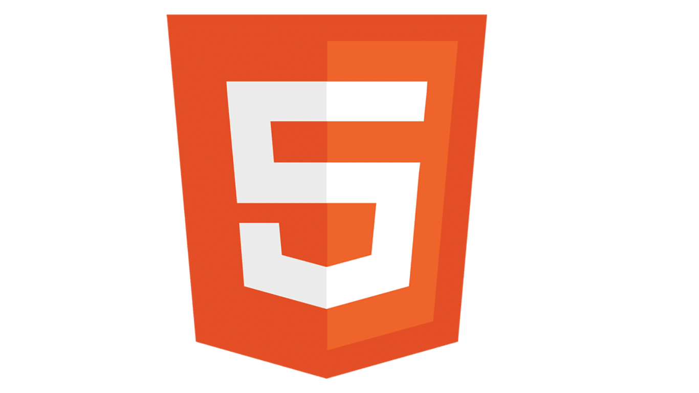
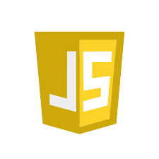
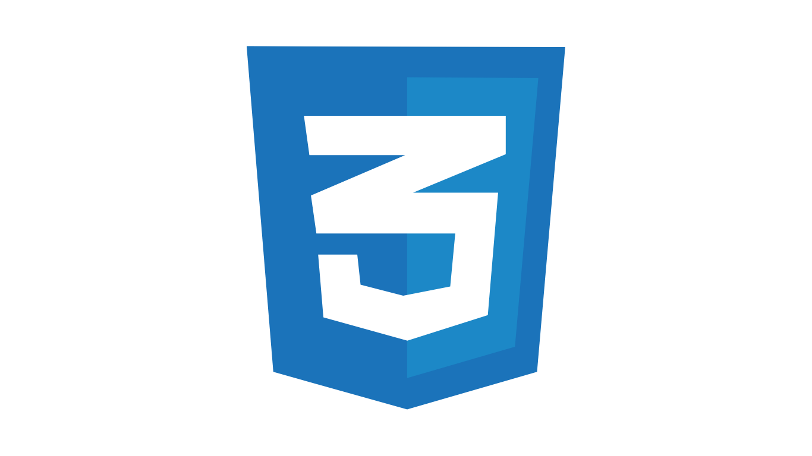
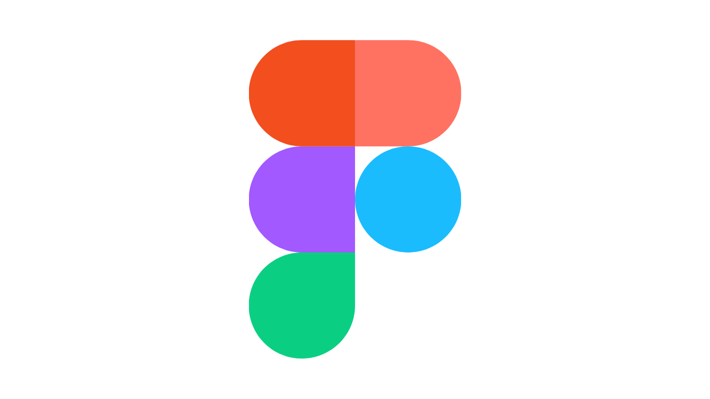
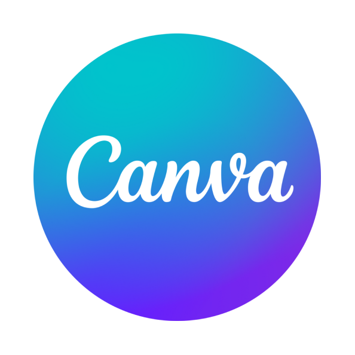

About me
Hello! I am Gifty Welian Siregar, a student of Information Technology Study Program at Universitas Brawijaya. My high school background in Mathematics and Natural Sciences formed the basis of my logical and analytical thinking. I have an interest in learning new things and deepening my knowledge in technology, especially in web development and data analysis.
My career goal is to become a technology professional who not only has technical skills, but is also able to create innovative solutions that contribute to the progress of the nation. I am enthusiastic to gain experience through projects, collaborations, and various activities that can broaden my horizons and prepare myself to play a real role in the technology industry.
SMP Swasta Budhi
Dharma Balige
SMA Negeri 2 Balige
Matematika & IPA
Universitas Brawijaya
Teknologi Informasi
Kemampuan teknis atau keahlian spesifik yang sifatnya terukur, dapat diajarkan, dan dipelajari melalui pendidikan formal, pelatihan, atau pengalaman.



Perangkat lunak dan platform yang digunakan untuk mendukung produktivitas, kolaborasi desain, dan pengembangan proyek.


Kemampuan interpersonal dan karakter yang mendukung kerja tim dan profesionalisme
Kemampuan memahami dan mengelola emosi diri serta orang lain dalam lingkungan kerja.
.png)
Pendekatan kreatif dan analitis dalam menemukan solusi atas permasalahan yang kompleks.
.png)
Kemampuan mengatur prioritas tugas dan memenuhi tenggat waktu dengan efektif dan efisien.
.png)
Kolaborasi aktif dan kontribusi nyata dalam lingkungan tim yang multidisiplin.
.png)
Penyampaian ide secara jelas dan efektif, baik secara lisan maupun tulisan.
.png)
Kemampuan menyesuaikan diri dengan cepat terhadap perubahan lingkungan dan teknologi baru.
Kumpulan karya dan proyek yang telah saya selesaikan